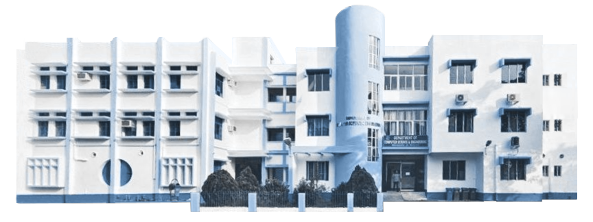

welcome to the department.
The Department of Computer Science and Engineering is relatively new compared to other departments in the University, having been established in 1992. It initially operated out of the Department of Physics, and offered a Postgraduate Diploma in Computer Applications (PGDCA) course. In the upcoming years, the department moved to its own building (in 2002) and began offering MCA and MTech courses (from 2001 and 2003 respectively).
The Department has since expanded to offer PhD, BTech (CSE), MSc (Data Science), and MSc (Computer Science) courses in its renovated premises. It features three computer labs equipped with modern systems and networking capabilities, a VLSI laboratory, and other facilities, along with smart classrooms for effective teaching.
The Department organizes several seminars, workshops, and events throughout the year, including Voyage - the annual departmental reunion, freshers, and farewell event.
The Department is committed to providing quality higher education in the field of computer science. Moreover, new horizons are explored through ongoing research into various specialties in this field, guided by our eminent faculty.
For further information you may also visit :
University of Kalyani - Department of Computer Science and Engineering